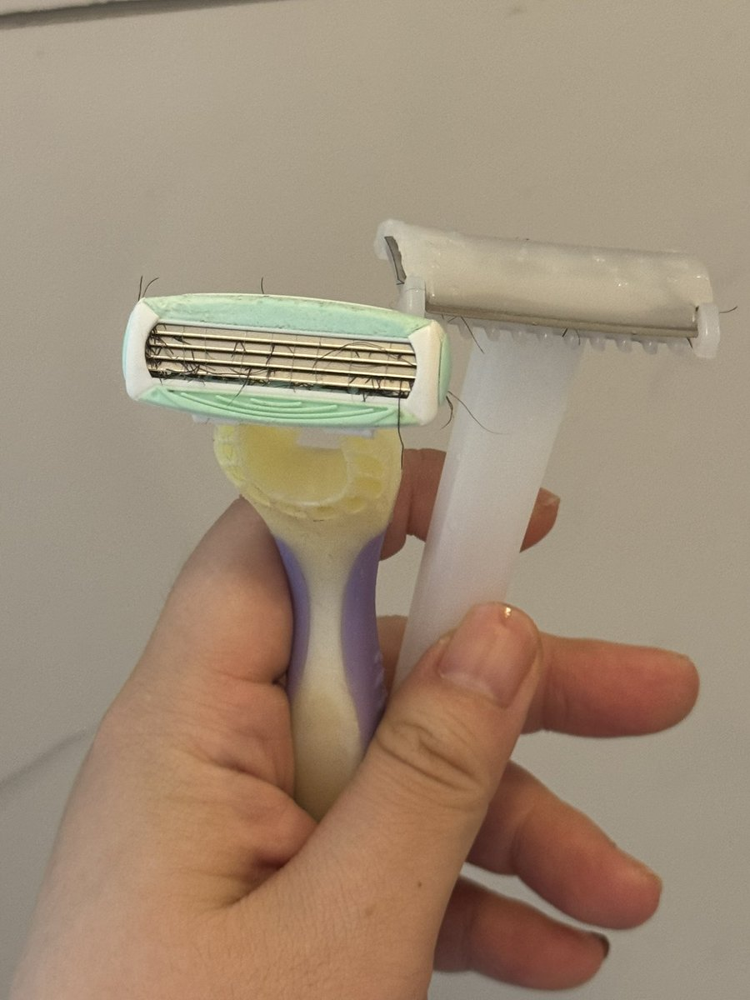
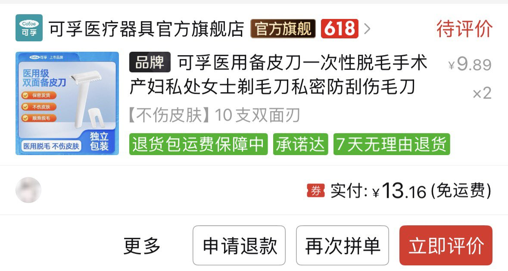

天
@penpunx
一次性备皮到不仅刮得痛还容易划伤，如果不是想要大放血建议别用
实际上盒刀就是最好用的


是奶茶姐
@DrinkMeMilkytea
用了一次性备皮刀才发现女性刮毛刀真是粉红税，十倍的价格但是真的很难用
皂头压根没用，多层刀片也没用，还很难清理（图里已经是我拿小刷子刷好多遍的成果了
一次性的大道至简，里面就是一片张海楼嘴巴里的同款刀片（？），开放式的刀片特别容易清理，拿个杯子装点水进去荡两下毛就干净了 https://t.co/QKT7CmzjNk